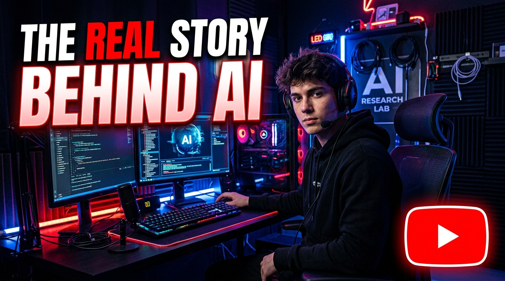
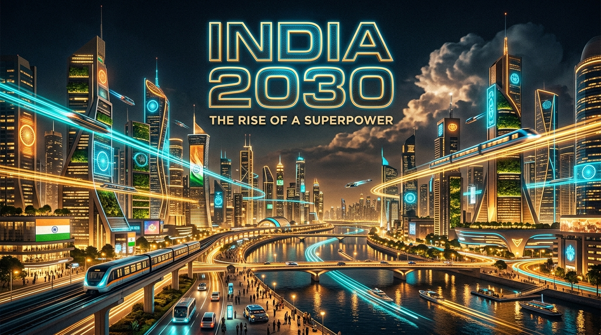
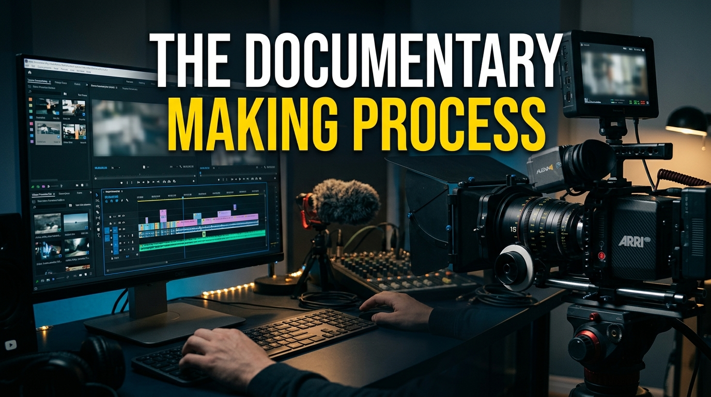

CINEMATIC SHOWCASE

2026 EDITING SHOWREEL

Full documentary edit featuring multi-camera narrative synchronization, dynamic pacing, historical archive restoration, and cinematic DaVinci Resolve color grading.

High-energy commercial advertisement featuring dynamic speed ramps, macro product match cuts, precision lighting glows, and punchy sound design crafted for conversion.
High-intensity visual teaser combining 3D title design, atmospheric anamorphic lens flares, impact hits, and layered orchestral trailer sound design.

Hyper-realistic generative AI video creation integrated with real-time face tracking, AI voice synthesis, and high-retention subtitle animations.
Mastery of narrative rhythm, dramatic pacing, match cuts, J/L cuts, multi-cam editing, and hook optimization for high retention.
Structuring documentaries, brand narratives, and commercial hooks that capture emotional resonance from the opening 3 seconds.
Balancing color spaces, primary/secondary adjustments, color wheels, vectorscopes, shot matching, and custom 3D LUT design.
Kinetic typography, 3D lower thirds, motion tracking, rotoscoping, screen replacements, and visual effects compositing.
Harnessing generative AI tools for synthetic b-roll, voice cloning, automatic transcript animations, and photorealistic avatars.
Layered sound design, cinematic risers, impact hits, atmospheric ambience, EQ balancing, and dialogue restoration.
My official YouTube documentary channel exploring deep dives into tech, history, and the future of human intelligence.
Visit Channel


Based in Mohali, Punjab, I am a video editor and visual storyteller dedicated to transforming raw captured frames into cohesive, high-retention narratives.
Currently pursuing higher studies at Maharaja Suhel Dev University while editing commercial campaigns, documentaries, and AI-driven video content for creators and brands worldwide.
Visual flair is meaningless without purpose. Pacing and rhythm are engineered to guide viewer attention effortlessly.
Combining traditional NLE timeline precision with modern generative AI video pipelines for unmatched visual results.
Have a documentary, commercial ad, YouTube series, or brand video? Let's bring your vision to life.